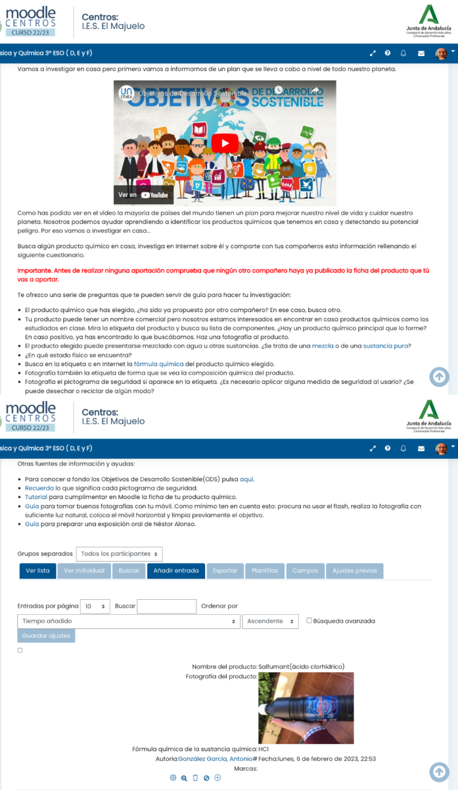
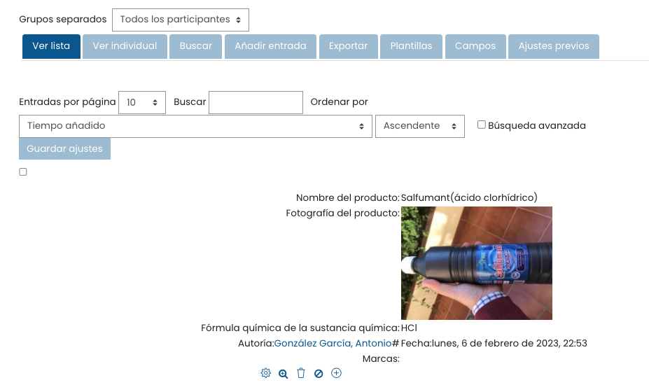
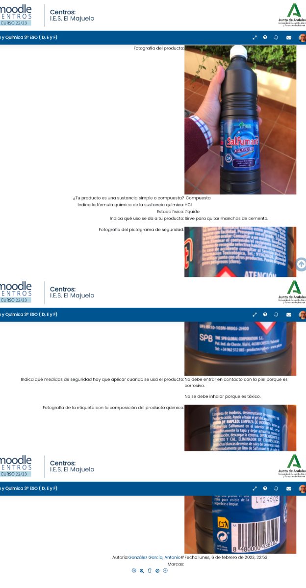
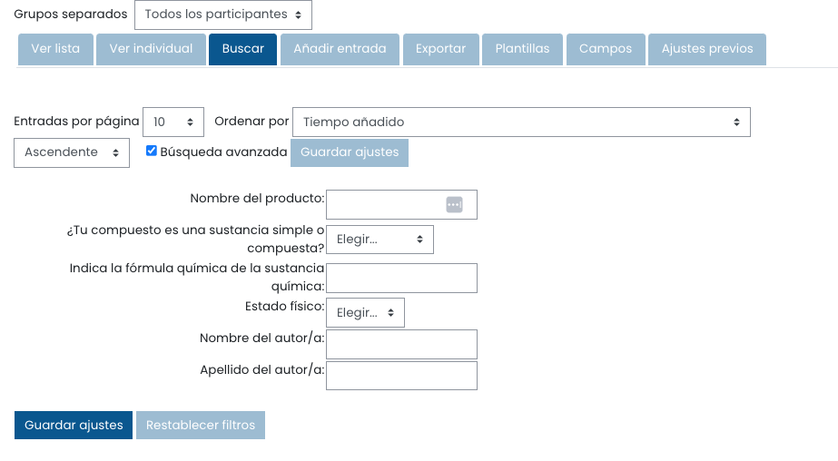
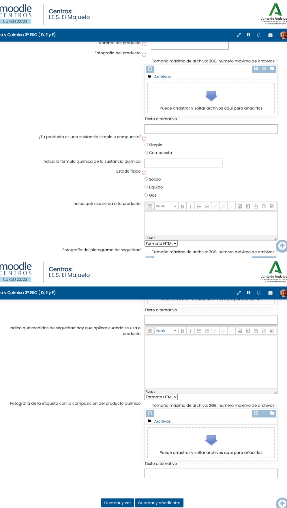

Tarea 2.22: ¿Qué producto químico tengo en casa?
5. Tarea en Moodle
Añado aquí una serie de capturas de pantalla para que se vea cómo queda la tarea en Moodle Centros.

Botones de la base de datos:
1. Ver lista

2. Entrada individual

3. Buscar

4. Añadir entrada

Obra publicada con Licencia Creative Commons Reconocimiento Compartir igual 4.0